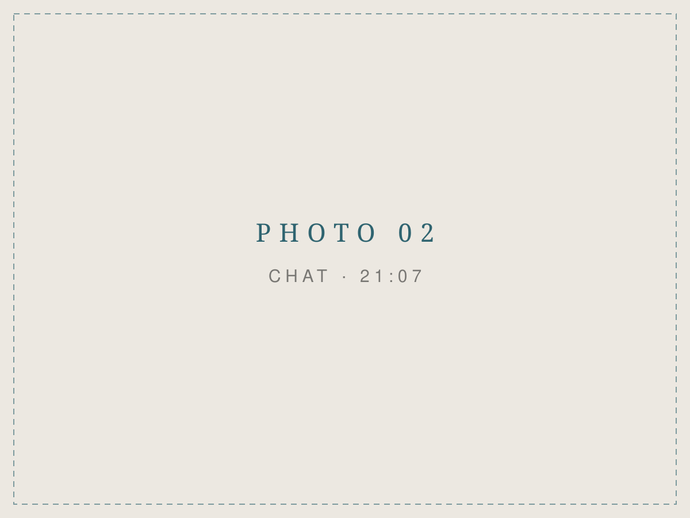
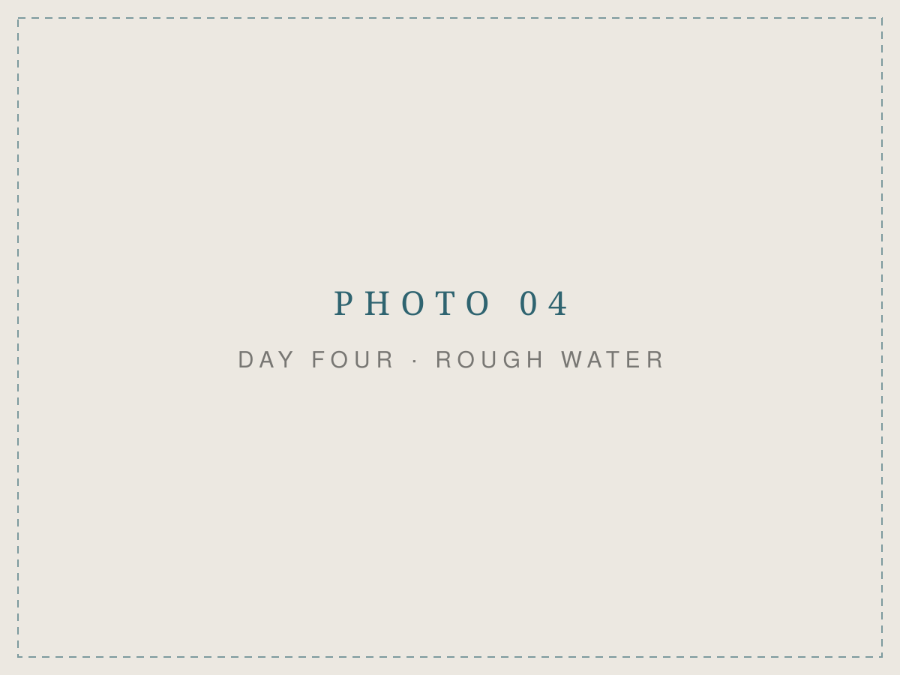
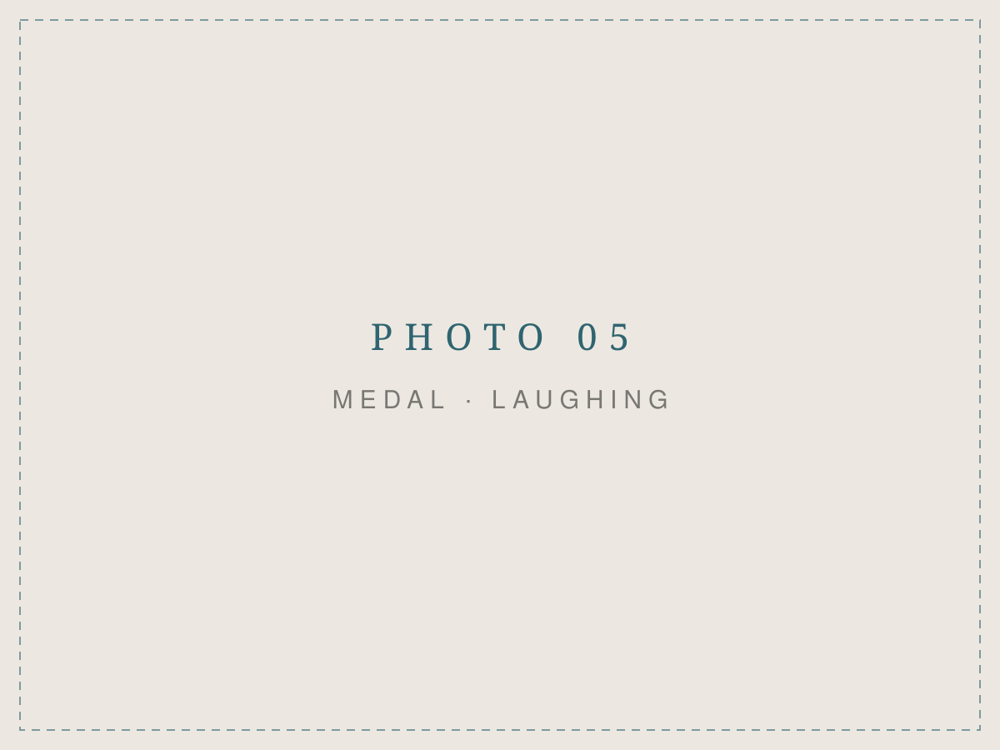
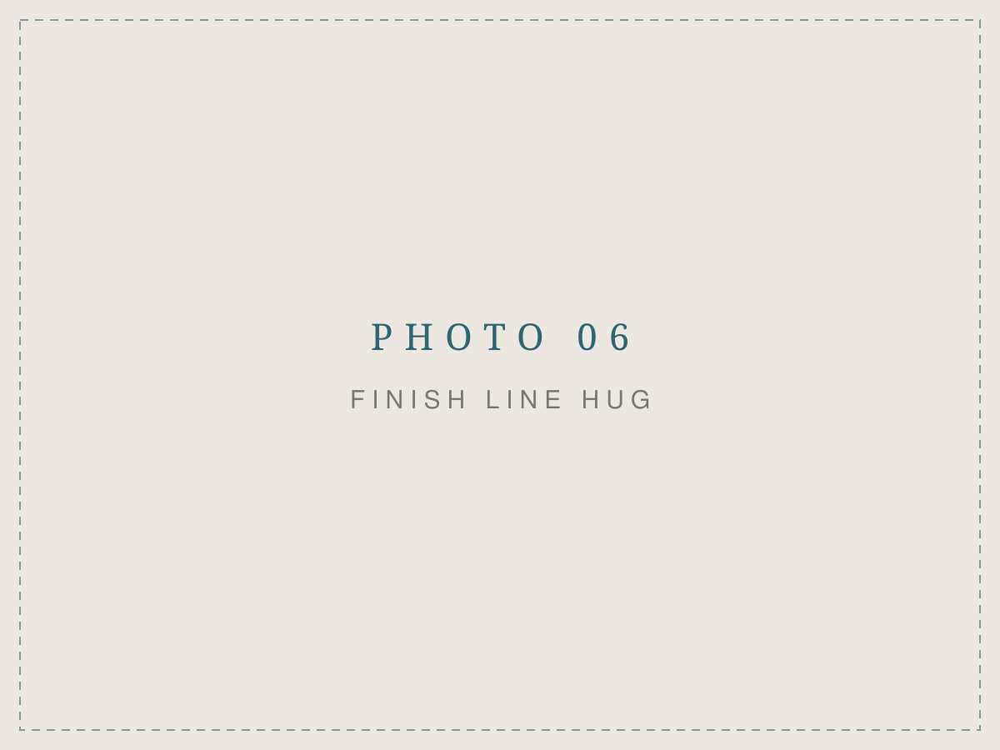

Самое сложное решение для спортсмена - и что было после
Самое сложное решение для спортсмена - сойти с гонки…
7 июня моя спортсменка Ксюша его приняла. А через семь недель проплыла 20 километров через Женевское озеро. Расскажу, что было между этими датами.
Гамбург
7 июня, IRONMAN Hamburg. На плавательном этапе у Ксюши случился дыхательный спазм. Холодная вода, вдох не заходит, вокруг сотни людей - а ты в воде один. Продолжать было небезопасно, и она приняла решение сойти. Правильное решение: гонок много, жизнь одна.
Через час мы уже сидели в отеле и делали разбор полётов. Не в формате «почему это случилось», а в формате «что делаем дальше». И тут нужно понимать одну вещь про страх.
Страх не лечится разговорами, книжками и мотивационными роликами. Мозг верит только опыту. Если после такого уйти из открытой воды на полгода - мозг зафиксирует одно: здесь ОПАСНО. И в следующий раз спазм придёт раньше. Ещё на берегу.
Мозг верит только опыту.
Значит, делаем наоборот. Идём в страх. Пока сезон в разгаре - стартуем максимально много. Не ради медалей и фоточек. Ради нового опыта для мозга: «я справился, я жив».
В девять вечера того же дня
И знаете, что меня поразило больше всего? В девять вечера того же дня Ксюша присылает мне ссылку на календарь заплывов. Без «дай мне время прийти в себя». Просто: «Давай выбирать старты».
В этот момент всё уже было решено.

Дальше по фактам. 5 июля - Австрия, ледяное горное озеро, 5 километров открытой воды. Через месяц после Гамбурга. Но это была только разминка.
24 июля - многодневка UltraSwim 33.3 через Женевское озеро. Четыре дня подряд, больше 20 километров суммарно. Во второй день - пересечение озера из Франции в Швейцарию, самый длинный заплыв в её жизни.
Но главное случилось на четвёртый день.
Четвёртый день

В теле - усталость трёх дней заплывов. Погода испортилась так, что Гамбург нервно курит в сторонке. И на первом же круге паника вернулась. Тот самый спазм. Тот самый страх.
Только теперь Ксюша знала, что делать. Выдохнула. Легла стрелкой на воду. Максимально расслабилась - и догребла до финиша.
Страх не исчез. Изменилось то, что она делает, когда он приходит. Именно за этим навыком мы шли с самого Гамбурга. Его не купишь ни у одного тренера и ни в одном обучающем видео. Только добыть. Самому. В воде.
Страх не исчез. Изменилось то, что она делает, когда он приходит.
И вот что самое смешное: плавание Ксюша, вообще-то, терпеть не может. На первом брифинге она так и сказала организаторам: «Плавание - не моё. Я здесь, чтобы сделать слабую сторону сильной». Четыре дня и 20 километров спустя её спросили на финише: «Ну что, теперь любишь плавание?» - «Нереально люблю».
Сколько в этом ответе любви, а сколько эндорфинов финиша - не знаю. Но одно знаю точно.

Сказала - сделала
Этот текст - про шалену жінку, которой я горжусь и у которой во многом беру пример. Главный её навык: сказала - сделала.
Цель Ксюши - квалификация на чемпионат мира IRONMAN в Коне. Получится или нет - сегодня не знает никто. Но есть люди, которые после тяжёлого опыта всю жизнь обходят его стороной. А есть те, кто вечером того же дня открывает календарь стартов. И такие обычно доходят.

P.S. Рассказ самой Ксюши по дням - в её Instagram: @karbovskaya.ks